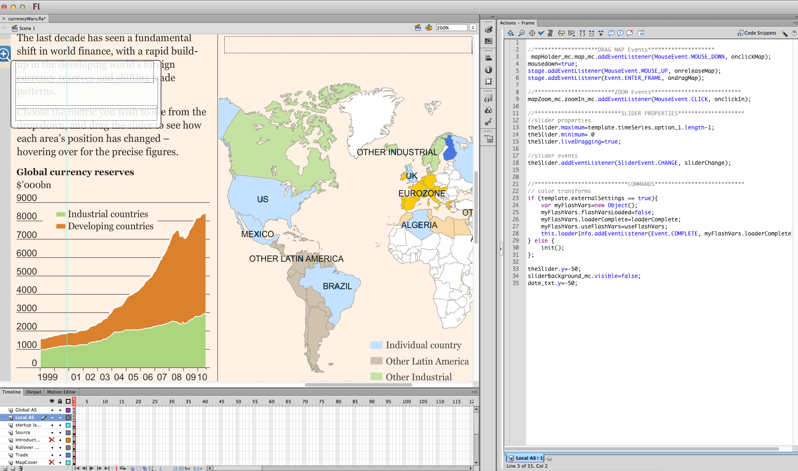
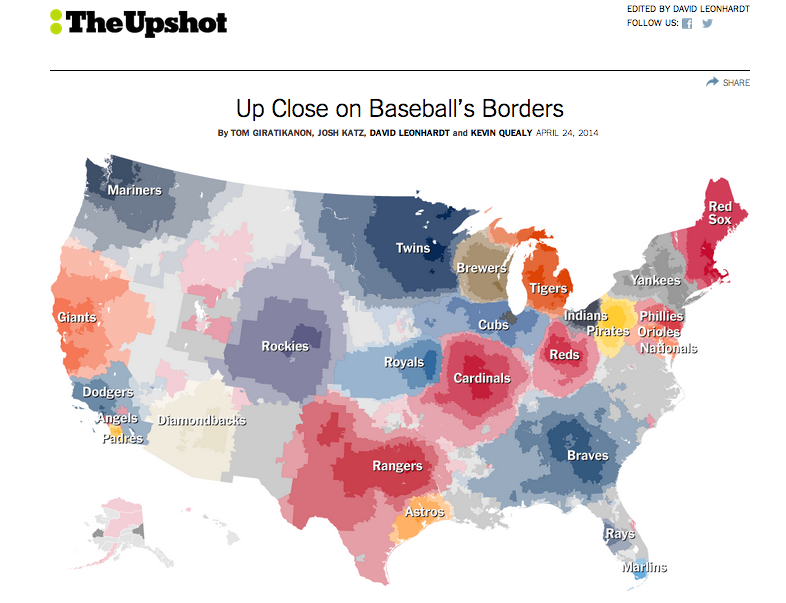
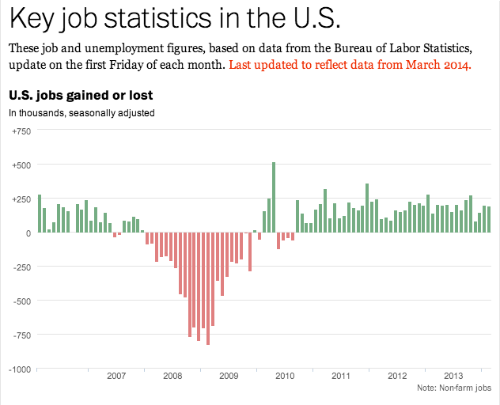

F
Visual journalism at the FT
Multi-disciplinary team spanning multiple desks:
- 17 designers
- 4 web developers
- 8 data/statistics journalists

Source: Rich Gordon, Knight Lab, Northwestern University
Lots of charts & graphics
Building charts at speed and volume

Maren Volsdal Skirbekk, 2011. “The current state of graphics in British newspapers and news magazines,” MA Thesis, University of Reading.
‘Pretty pictures’ are not the objective
“I sort of see data journalism ... as social science done on deadline.
“We’re using the tools that social scientists have used for years ... [and] applying those tools to journalism problems and using it to help us tell stories with more authority.”
— Steve Doig, Arizona State University
Reporting using data

Reporting using data

News applications
“a large web-based interactive database that tells a journalistic story using software instead of words and pictures.”
— Scott Klein, ProPublica
BBC: Most read in 2013

Source: “The Great British class calculator: What class are you?,” BBC News Online, April 3, 2013
BBC: Most read in 2013
“The class calculator … has attracted about six million page views on the BBC News site, making it the second most popular article of 2013 to date. … Nearly 1.9 million of those views have come from those of you accessing the site on mobiles and tablets.”
— Steve Herrmann, “The Great British Class calculator,” BBC The Editors blog, April 5, 2013
NYT Most read in 2013 ever

Source: “How Y’all, Youse and You Guys Talk”New York Times, December 21, 2013
NYT Most read in 2013 ever
Josh Katz: “I’d enjoyed the news as a consumer … but I’d never really pictured myself as being a part of the journalism world.”
“I’d always had an interest in data visualization and finding a way of communicating results graphically … What I didn’t realize is that that is essentially a lot of what they do at Times graphics, so it was really a perfect fit.”
Source: Ryan Graff, “Behind the dialect map interactive:
How an intern created The New York Times’ most popular piece of content in 2013,” Knight Lab, January 20, 2014
FT Austerity Audit

Source: Financial Times
Recent challenges
- Impact of the rapid shift to mobile readership
- New skills required for visual journalism
Shift from Flash...
...to HTML and JavaScript

From static Illustrator graphics ...
... to dynamically-generated
Source: Financial Times
From ‘boxes on pages’...

Source: Financial Times
... to responsive design
Source: Financial Times
... integrating multimedia
Source: Financial Times
Good practice
Some characteristics of effective news applications:
- Explanatory and exploratory
- Highlights personal relevancy
- Social media integration
- Reusable product
- Responsive for mobile use
Near vs far: the Martini-glass narrative
Highlight the important views before handing over control.
Source: Edward Segel and Jeffrey Heer, “Narrative Visualization: Telling Stories with Data”
Automation
Source: Financial Times
Personalisation

Personalisation

Simple calculators to contextualise
Social media integration

Social media integration

Why now?
Growing availability of public data

Source: Land Registry
Growing availability of public data

Source: Legislation.gov
Growing private ‘data exhaust’
Source: Financial Times
... has surprising new uses
Source: The Upshot (New York Times)
Text mining

Source: Getty via Telegraph.co.uk
Text mining
Source: Guardian.co.uk
Text mining
Source: “Plot to buy the World Cup,” Sunday Times, June 1, 2014
The future
Chart-making tools for non-specialists
Financial Times
Automated routine charting
Robot reporters

Los Angeles Times, via Ben Welsh
Robot reporters